-
Simplification of Logic Circuits
Logic Circuits
Boolean algebra allows us to apply provable mathematical principles to design logic circuits but this can be difficult and time consuming.
Instead, Karnaugh maps (K-maps) are used by designers as a more automated method to do this
The following labs go through some exercises for you to try out and solutions are provided at the end.
-
Karnaugh Maps
- The following demonstrate various inputs and their corresponding karnaugh maps used to simplify the Boolean expressions 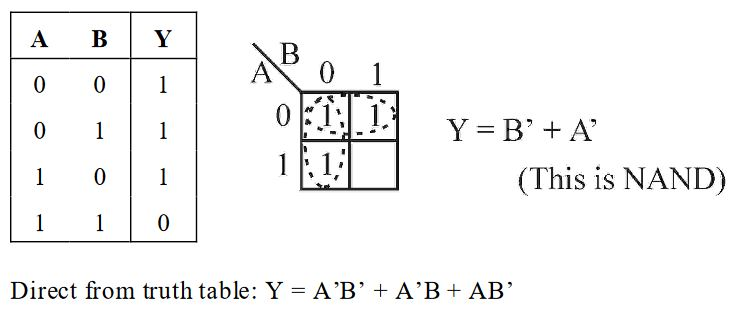 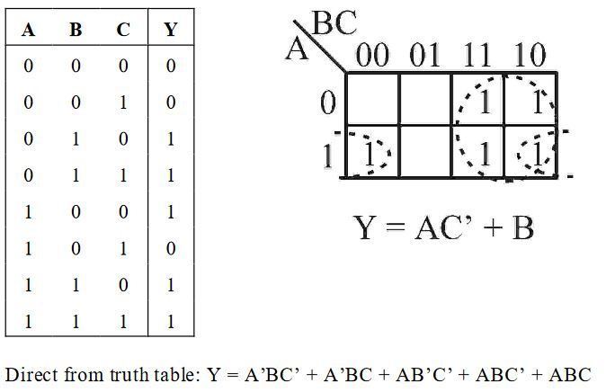 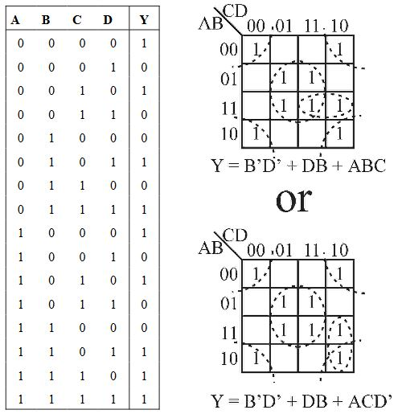
EXERCISE 1: Simplify the logic diagram below

EXERCISE 2: Simplify the logic diagram below
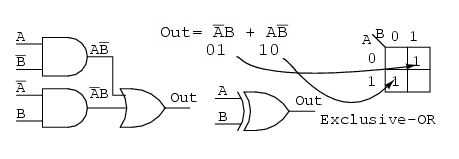
EXERCISE 3:
Reduce the following to it's simpliest Boolean Expression

EXERCISE 4:
Reduce the following to it's simpliest Boolean Expression

EXERCISE 5:
Use a K-map to reduce the following 4-input circuit.

EXERCISE 6:
Simplify the following using
- the rules of Boolean Algebra and
- a Karnaugh map
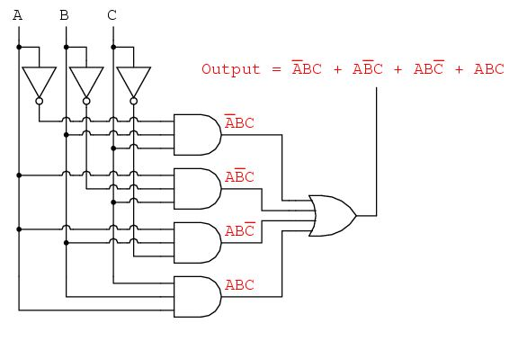
-
Use of Circuitry Simulators
Logic circuit simulators can simulate electronic logic gates in an interactive environment on your computer. Such environments are often used to design circuits before implementing them with real electronic components
If you are interested in designing some circuitry, there are several nice simulators freely available.
One set of tools is called the Chipmunk System. It provides a wide variety of applicaations including electronic circuit simulation.
log is the program you need to download and run on your machine
Another such program is Multimedia Logic by Softronix.
Finally, you might choose to use Paul Falstad's online simulator
it might be interesting if you find alternatives, to post links on Slack to what you consider your best find!
-
Combinational Logic Circuits
The combinational logic circuits can be classified into various types based on the purpose of usage, such as - arithmetic & logical functions, - data transmission and - code converters.
Binary Arithmetic
In computers, arithmetic operations are performed inside the CPU by the ALU.
Arithmetic in binary is much like arithmetic in other numeral systems. Addition is completed using a component within the CPU called an adder
Function of an adder: add two binary numbers, output result
- Inputs: two bits (x,y) to add and one carry-in(Cin)
- Outputs: sum bit (s) and one carry out but (Cout)
Recall the possibilities for adding two binary numbers:
0 + 0 = 0 1 + 0 = 1 1 + 1 = 2 which is 10 in binary which is 0 with a carry of 1 1 + 1 + 1 (carry) = decimal 3 which is 11 in binary. In your calculation, write down one 1 and a carry of 1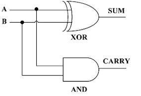
EXERCISE: Complete the truth table for the Half Adder
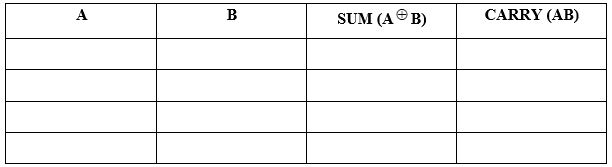
Full Adder
- The full adder is a three input and two output combinational circuit
- A circuit called a full adder takes the carry-in value into account
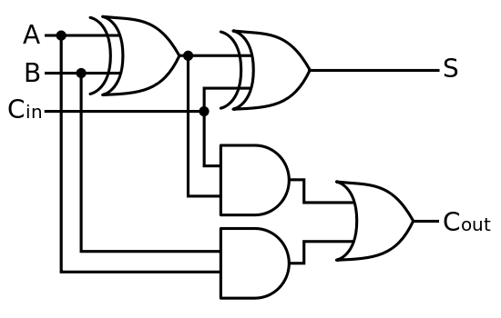
EXERCISE: Complete the truth table for the Full Adder
Remember: All of the more complex adder architectures are constructed from its basic building blocks such as Half Adder and Full Adder so it's important to understand the workings of these.
Again, experimenting with different circuit combinations will allow you become more familiar with the expected outputs of them...
-
Karnaugh Maps
EXERCISE: Simplify the logic diagram below
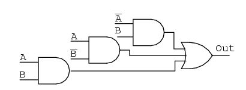
- Write the Boolean expression for the original logic diagram as shown below
- Transfer the product terms to the Karnaugh map
- Form groups of cells as in previous examples
- Write Boolean expression for groups as in previous examples
- Draw simplified logic diagram
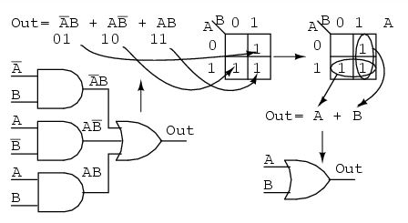
EXERCISE 2: Simplify the logic diagram below

- Write the Boolean expression for the original logic diagram shown above
- Transfer the product terms to the Karnaugh map.
- It is not possible to form groups.
- No simplification is possible; leave it as it is.
NOTE No logic simplification is possible for the above diagram. This sometimes happens.
- Neither the methods of Karnaugh maps nor Boolean algebra can simplify this logic further.
- We show an Exclusive-OR schematic symbol above; however, this is not a logical simplification (It just makes a schematic diagram look nicer).
- Since it is not possible to simplify the Exclusive-OR logic and it is widely used, it is provided by manufacturers as a basic integrated circuit (7486)
EXERCISE 3:
Reduce the following to it's simpliest Boolean Expression
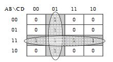 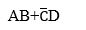
EXERCISE 4:
Reduce the following to it's simpliest Boolean Expression
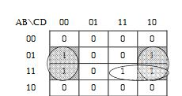
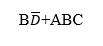
EXERCISE 5:
Use a K-map to reduce the following 4-input circuit.
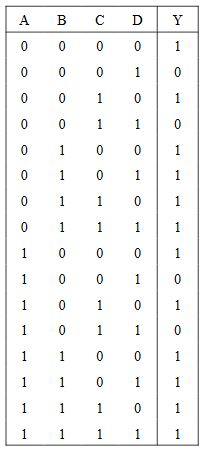
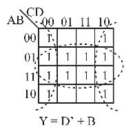

EXERCISE 6:
Simplify the following
- Here we are minimising the Boolean expression and therefore simplifying the circuitry needed to implement the equivalent functions:
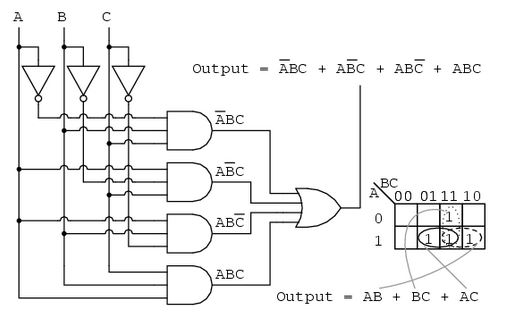
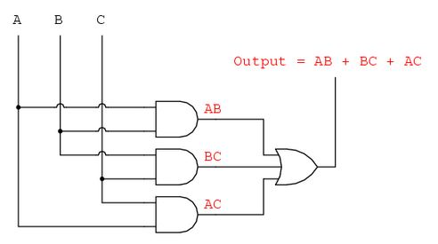